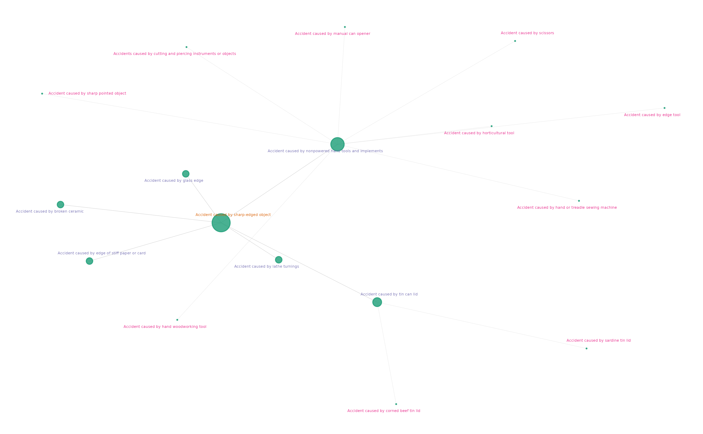

query-and-graph-concept-hierarchies
Source:vignettes/query-and-graph-concept-hierarchies.Rmd
query-and-graph-concept-hierarchies.RmdIn this vignette we will step through the process of querying the OMOP standard vocabularies to get a list of concepts and then visualise the relationship between those concepts.
By default this will use the vocabulary tables that we have saved in the cloud (see the readme). You can repeat with vocabularies that you have downloaded yourself but you may get different results if you have selected different vocabularies.
Getting started, install from github if you haven’t already & use library().
Example 1 - query relations of a concept and visualise
Here we find a single SNOMED concept, search for it’s relations and the relations of those (nsteps=2) and create a graph of the hierarchy.
sharp <- omop_names("Accident caused by sharp-edged object", standard="S")
relations <- omop_relations(sharp$concept_id,
r_ids=c('Is a','Subsumes'),
nsteps=2)
# nodetxtsize made small to make plot visible in vignette, default=9 fine outside
omop_graph(relations, saveplot=FALSE,
graphtitle=NULL, legendshow=FALSE, nodetxtsize=1, textcolourvar="step")
In this case the relations were all from one domain so that is why we didn’t need to show the legend.
Example 2 a tree plot for cancer staging data
AJCC (American Joint Committee on Cancer) has a hierarchical staging classification with different versions. All are represented in OMOP Cancer Modifiers.
ajcc8 <- omop_names("AJCC/UICC 8th edition", exact=TRUE)
ajcc_rel1 <- omop_relations(ajcc8$concept_id, nsteps=1)
#TODO find a quicker example of getting more than one relations step
# getting recursive relations takes a few minutes
#ajcc_rel2 <- omop_relations(ajcc8$concept_id, nsteps=2)
# plot is too big to display nicely in this vignette
# but is auto saved in a nice to pdf
# omop_graph(ajcc_rel1, ggrlayout="tree",
# legendshow = FALSE, saveplot = TRUE,
# width = 150, nodetxtangle = 45)